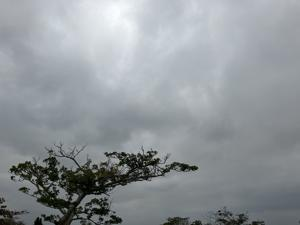
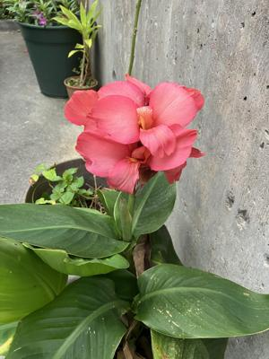
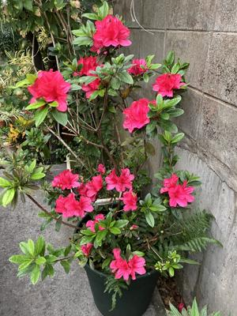

うるがいの話 ある日
最新: 飲み会は行かない【うるがいの話 ある日】とは 一日だけのプログです
『うるがいの話』の最新一日だけのプログで、通信料が少なく経済的だ。カニの画像をクリックすると全ての日付が載る『うるがいの話』サイトを表示します
|
|
【うるがいの話】 うるがい(ｳﾙｶﾞｲ urugai)とは、『もずくがに』の名前でとても大きくなります。 |
|---|---|
|
|
【カミマヤーの話】 猫のことを方言でマヤーといいます。カミマヤー（kamimayaa）とは、神の猫のことです。 |
|
【たながぁの音楽】 たながぁ（ﾀﾅｶﾞｰ tanagaa）とは手長えびのことで、何種類かあり大きいのは車 エビぐらいになります。 |

|
【ぶながぁの話】 ぶながぁ(ﾌﾞﾅｶﾞｰ bunagaa)とは、赤い髪の毛、赤い身体、そして身長は１ｍ２０ｃｍ ぐらい、川の蟹を食べているの目撃された。場所は沖縄県国頭郡大宜味村のと ある村僕の隣近所に住んでいる爺さんから、聞いた話です。 |
|
|
【ギーマの話】 ギーマ(giima)とは、山原の里山に咲くスズランに似た、 花を付けます。実は食べられます、 気が付くと口の周りが紫になっています。 |
2024年02月26日 (月）飲み会は行かない
20:39
 
20:39
風邪のため午前中休みます。
20:39
寝ている間に熱が上がってました。半日から1日休みに変更します。
オギさんの勤務報告・・。先週から、顔をみていない。今日は、一期生の飲
み会の幹事、ソナさんが代行するようだ。３名だけの飲み会になってしまっ
ている、そもそも毎月一回は無謀だと思うが。私は行かない、８名ぐらいで
ないと。

今日は出勤の日、ワイシャツ姿の中年男性にＰＩＮの対応は、済んだ？と確
認するとマダとのこと。なにー！、たまたま研修室に顔をだしたオカさんに
クレームをいう。４時過ぎ、研修担当に対応をとってもらい、やっと解決。
出勤したかいがあった。
２０時３４分 ビットコインの総資産 ￥２２、３２０（↓２０８）